Zones
5 zones, from the first village to the end of the world.
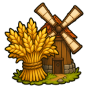
AshvaleA grim village on the edge of civilization.
| Property | Value |
|---|---|
| Combat level | 1+ |
| Travel | 50 coins |
| Teleport | Sorcery 5 |
| Slayer master | 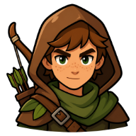 Scout Tomas (Slayer 5, combat 10) |
| Diary | Ashvale Diary |
| Pets | 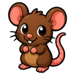 Ratling |
Monsters
| Monster | Level | Weakness |
|---|---|---|
| 2 | ⚔️ Melee | |
| 3 | 🏹 Ranged | |
| 5 | 🏹 Ranged | |
| 8 | 🏹 Ranged | |
| 12 | 🏹 Ranged | |
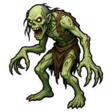 Ragged Ghoul | 13 | 🔮 Magic |
Gathering
| Activity | Level | Gives | XP |
|---|---|---|---|
| 🎣 Net Shrimp | 🎣 Fishing 1 | 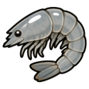 Raw Shrimp | 10 |
| 🎣 Bait Anchovies | 🎣 Fishing 15 | 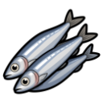 Raw Anchovies | 30 |
| ⛏️ Mine Stone | ⛏️ Mining 1 | 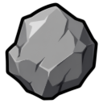 Stone | 10 |
| ⛏️ Mine Copper Ore | ⛏️ Mining 1 | 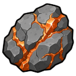 Copper Ore | 15 |
| ⛏️ Mine Tin Ore | ⛏️ Mining 1 | 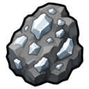 Tin Ore | 15 |
| ⛏️ Mine Rune Essence | ⛏️ Mining 1 | 6 | |
| 🌿 Forage Guam | 🌿 Herbalism 1 | 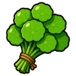 Guam Herb | 15 |
| 🪓 Chop Trees | 🪓 Lumbering 1 | 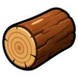 Logs | 25 |
🧔 Ashvale General Store
Kept by Merchant Hale.
| Item | Price |
|---|---|
| 10 coins | |
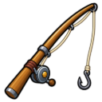 Fishing Rod | 40 coins |
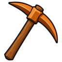 Bronze Pickaxe | 25 coins |
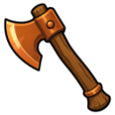 Bronze Axe | 25 coins |
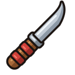 Fletching Knife | 15 coins |
| 15 coins | |
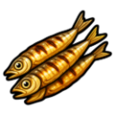 Anchovies | 30 coins |
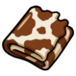 Cowhide | 15 coins |
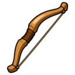 Wooden Shortbow | 50 coins |
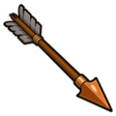 Bronze Arrow | 4 coins |
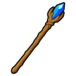 Apprentice Staff | 50 coins |
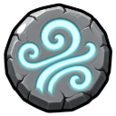 Air Rune | 6 coins |
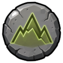 Earth Rune | 8 coins |
Quests
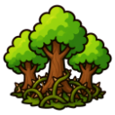
ThornwoodAn ancient cursed forest. The trees bleed at night.
| Property | Value |
|---|---|
| Combat level | 20+ |
| Travel | 150 coins |
| Teleport | Sorcery 25 |
| Slayer master | 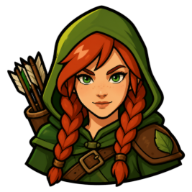 Ranger Elka (Slayer 15, combat 30) |
| Diary | Thornwood Diary |
| Pets | 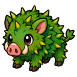 Briar Cub |
Monsters
| Monster | Level | Weakness |
|---|---|---|
| 22 | 🔮 Magic | |
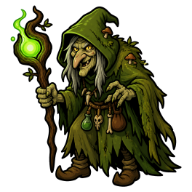 Hedge Witch | 28 | ⚔️ Melee |
| 33 | 🔮 Magic | |
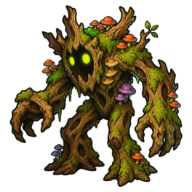 Rotwood Shambler | 38 | 🔮 Magic |
Gathering
| Activity | Level | Gives | XP |
|---|---|---|---|
| 🎣 Fly Fish Trout | 🎣 Fishing 30 | 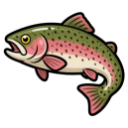 Raw Trout | 50 |
| 🎣 Fly Fish Salmon | 🎣 Fishing 45 | 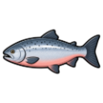 Raw Salmon | 70 |
| ⛏️ Mine Iron Ore | ⛏️ Mining 15 | 35 | |
| ⛏️ Mine Silver Ore | ⛏️ Mining 20 | 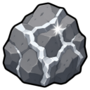 Silver Ore | 40 |
| 🌿 Forage Marrentill | 🌿 Herbalism 15 | 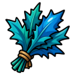 Marrentill | 25 |
| 🌿 Forage Tarromin | 🌿 Herbalism 30 | 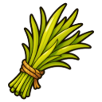 Tarromin | 35 |
| 🪓 Chop Oak | 🪓 Lumbering 15 | 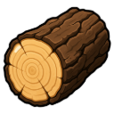 Oak Logs | 37.5 |
| 🪓 Chop Willow | 🪓 Lumbering 30 | 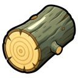 Willow Logs | 67.5 |
| 🪓 Chop Maple | 🪓 Lumbering 45 | 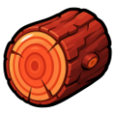 Maple Logs | 100 |
🧢 Trapper Odo's Outfitters
Kept by Trapper Odo.
| Item | Price |
|---|---|
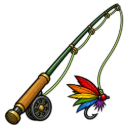 Fly Fishing Rod | 150 coins |
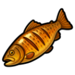 Trout | 60 coins |
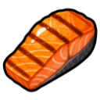 Salmon | 90 coins |
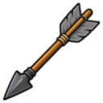 Iron Arrow | 9 coins |
| 10 coins |
Quests
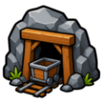
Deepstone MinesAbandoned mines deep beneath the earth.
| Property | Value |
|---|---|
| Combat level | 40+ |
| Travel | 400 coins |
| Teleport | Sorcery 40 |
| Slayer master | 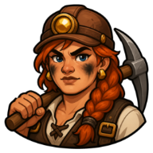 Forewoman Brack (Slayer 30, combat 50) |
| Diary | Deepstone Diary |
| Pets | 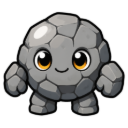 Pebble |
Monsters
| Monster | Level | Weakness |
|---|---|---|
| 44 | 🔮 Magic | |
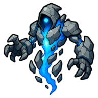 Stone Wraith | 45 | 🔮 Magic |
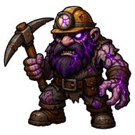 Corrupted Miner | 50 | 🏹 Ranged |
| 58 | ⚔️ Melee |
Gathering
| Activity | Level | Gives | XP |
|---|---|---|---|
| 🎣 Cage Lobster | 🎣 Fishing 60 | 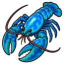 Raw Lobster | 90 |
| ⛏️ Mine Coal | ⛏️ Mining 30 | 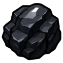 Coal | 50 |
| ⛏️ Mine Gold Ore | ⛏️ Mining 40 | 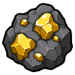 Gold Ore | 65 |
| ⛏️ Mine Gem Rocks | ⛏️ Mining 40 | 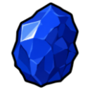 Uncut Sapphire,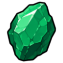 Uncut Emerald,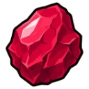 Uncut Ruby, Uncut Diamond | 65 |
| ⛏️ Mine Amethyst Ore | ⛏️ Mining 45 | 80 | |
| 🌿 Forage Harralander | 🌿 Herbalism 45 | 45 |
⛏️ Deepstone Supply Co.
Kept by Quartermaster Ruhl.
| Item | Price |
|---|---|
| Lobster Pot | 400 coins |
| Coal | 45 coins |
| Lobster | 180 coins |
| Steel Arrow | 22 coins |
| 70 coins |
Quests
Bleakhaven Ruins
Ruins of a necromancer's city. The dead refuse rest.
| Property | Value |
|---|---|
| Combat level | 65+ |
| Travel | 900 coins |
| Teleport | Sorcery 58 |
| Slayer master | Reaper Joss (Slayer 45, combat 70) |
| Diary | Bleakhaven Diary |
| Pets | Grave Wisp |
Monsters
| Monster | Level | Weakness |
|---|---|---|
| 65 | 🔮 Magic | |
| 72 | ⚔️ Melee | |
| 78 | 🏹 Ranged |
Gathering
| Activity | Level | Gives | XP |
|---|---|---|---|
| 🎣 Harpoon Swordfish | 🎣 Fishing 75 | Raw Swordfish | 105 |
| ⛏️ Mine Viridian Ore | ⛏️ Mining 60 | Viridian Ore | 100 |
| ⛏️ Mine Crystal Ore | ⛏️ Mining 75 | Crystal Ore | 125 |
| 🌿 Forage Irit Leaf | 🌿 Herbalism 60 | Irit Leaf | 60 |
| 🌿 Forage Duskweed | 🌿 Herbalism 75 | Duskweed | 75 |
| 🪓 Chop Yew | 🪓 Lumbering 60 | Yew Logs | 175 |
| 🪓 Chop Mystic Tree | 🪓 Lumbering 75 | Mystic Logs | 250 |
🕯️ The Bone Market
Kept by Hollow Vex.
| Item | Price |
|---|---|
| Harpoon | 1,200 coins |
| Swordfish | 320 coins |
| 180 coins |
The Voidscar
A tear in reality. Only the strongest dare enter.
| Property | Value |
|---|---|
| Combat level | 85+ |
| Travel | 2,000 coins |
| Teleport | Sorcery 80 |
| Slayer master | Warden Skye (Slayer 60, combat 90) |
| Diary | Voidscar Diary |
| Pets | Drakeling |
Monsters
| Monster | Level | Weakness |
|---|---|---|
| Void Stalker | 88 | ⚔️ Melee |
| 90 | 🔮 Magic | |
| Dread Revenant | 99 | 🏹 Ranged |
| 112 | 🏹 Ranged |
Gathering
| Activity | Level | Gives | XP |
|---|---|---|---|
| 🎣 Harpoon Shark | 🎣 Fishing 90 | Raw Shark | 125 |
| ⛏️ Mine Ember Ore | ⛏️ Mining 90 | Ember Ore | 160 |
| 🌿 Forage Starbloom | 🌿 Herbalism 90 | Starbloom | 90 |
| 🪓 Chop Elder Tree | 🪓 Lumbering 90 | Elder Logs | 325 |